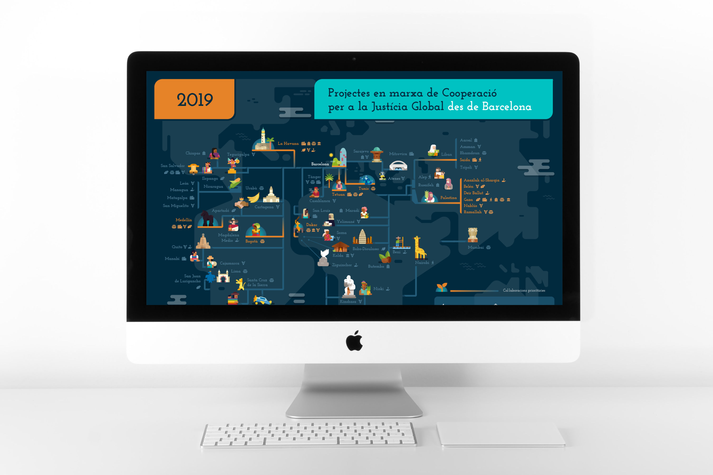
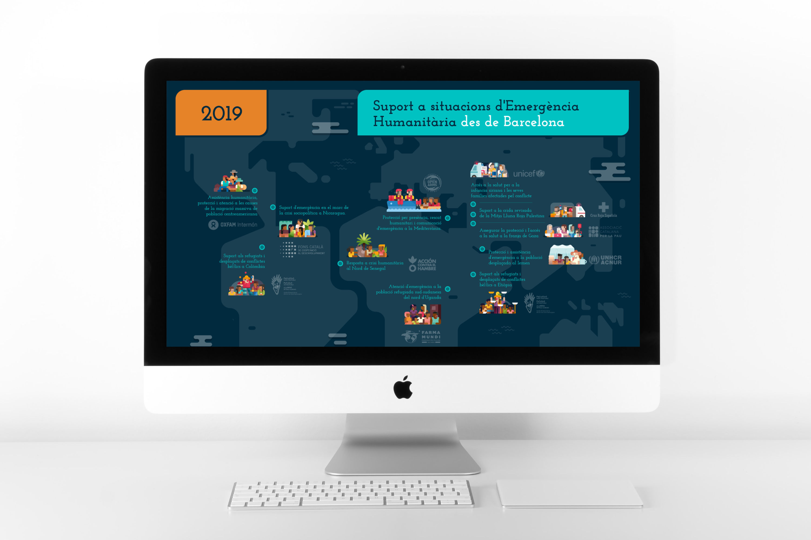
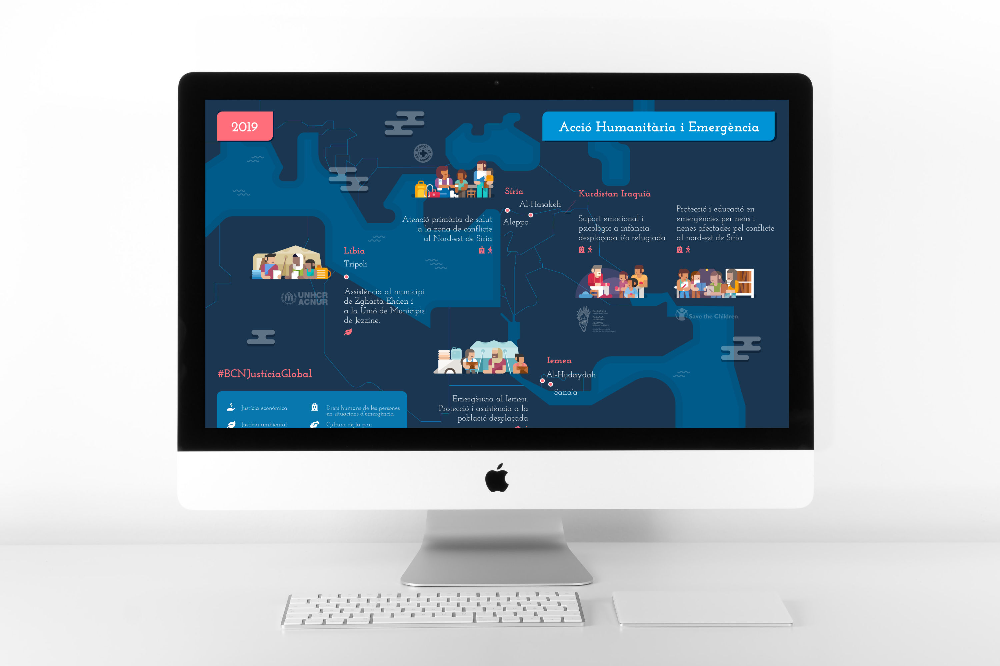
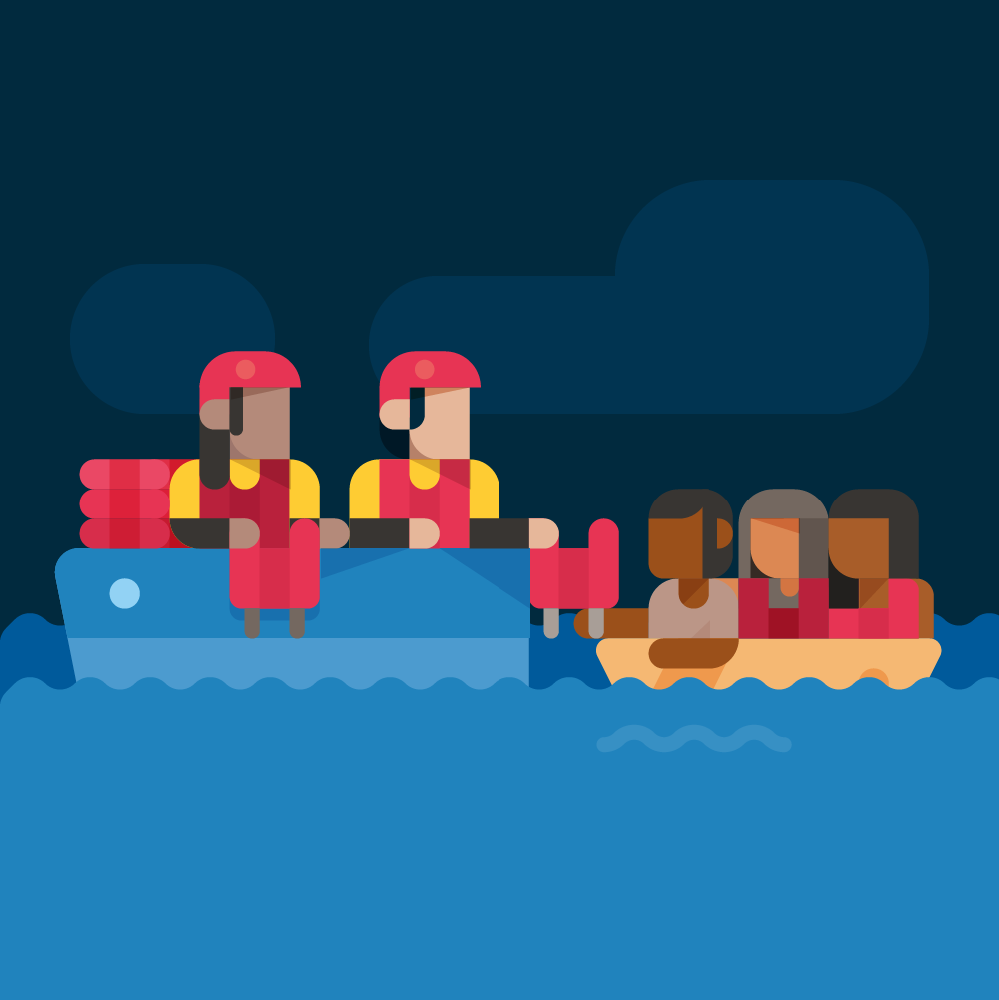
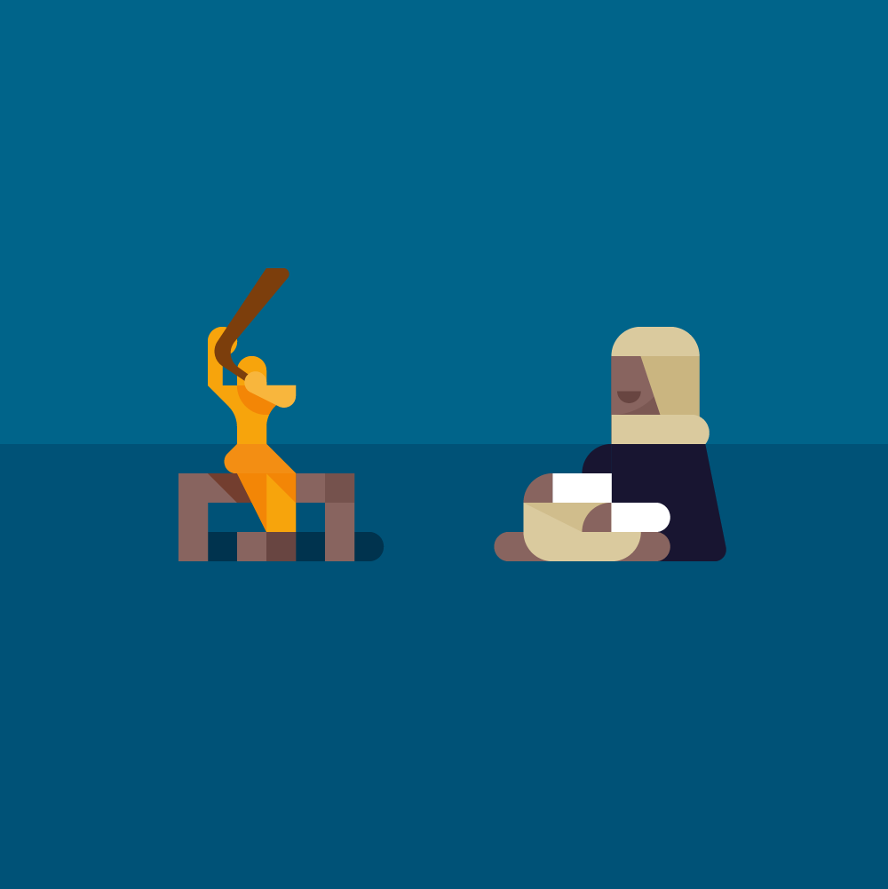
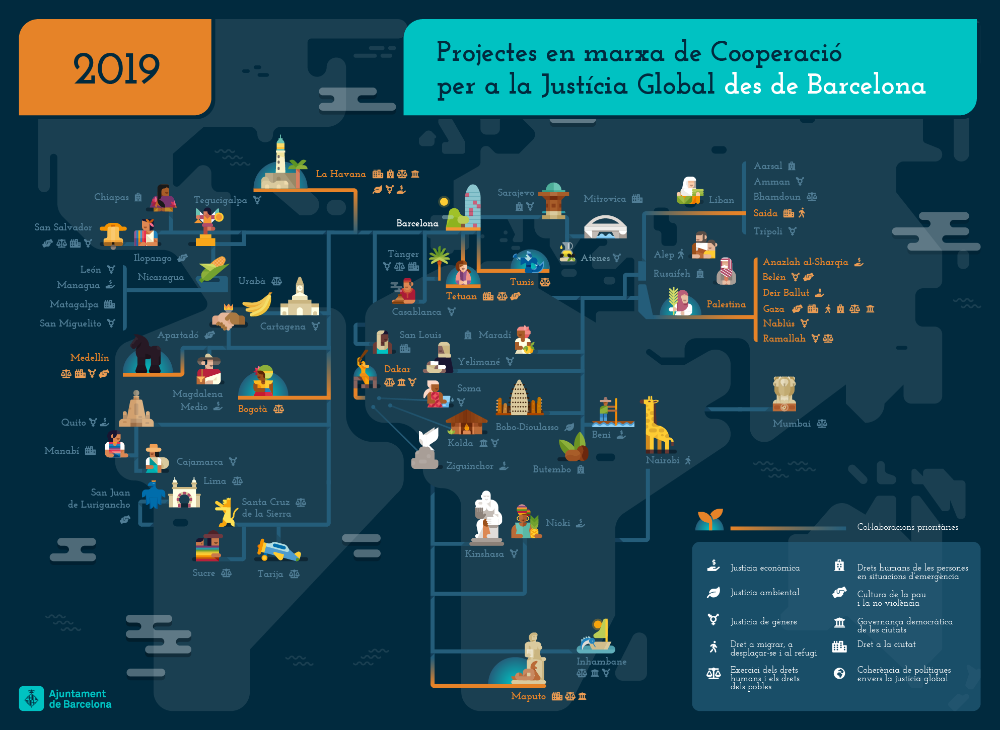
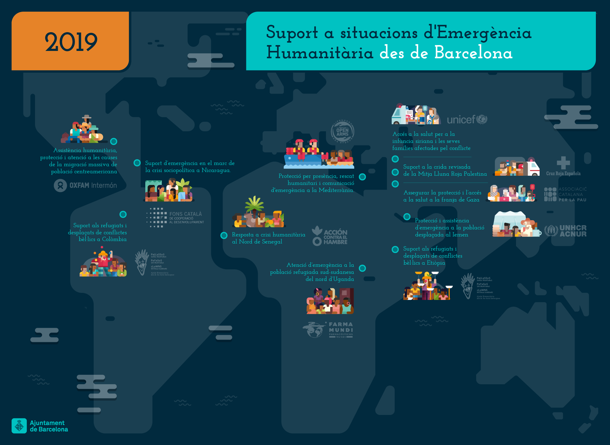
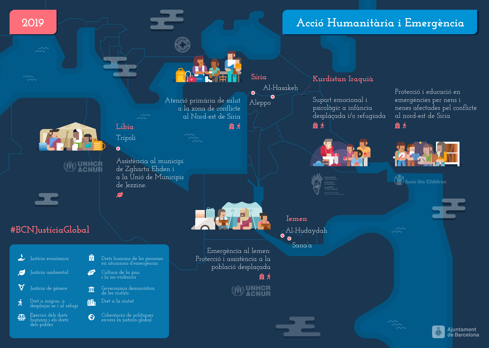

The Barcelona City Council asked me for an infographic of the projects for Cooperation for Global Justice in which he was involved. I designed and illustrated a world map and a system of icons that identify the cities of the project or the zones of emergency actions.







